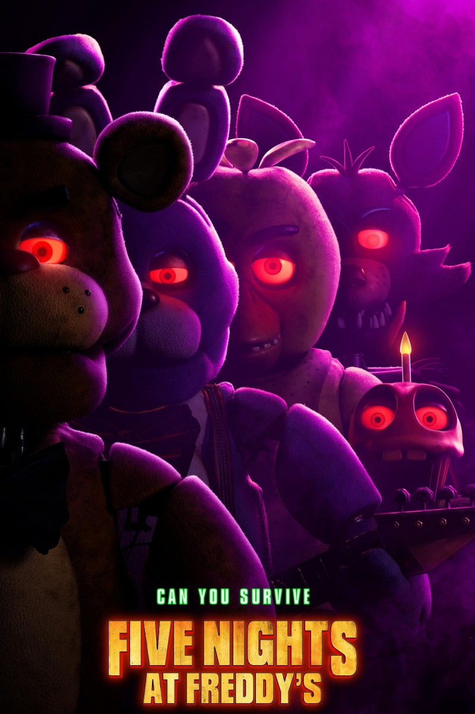
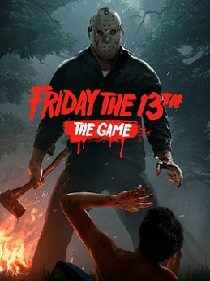
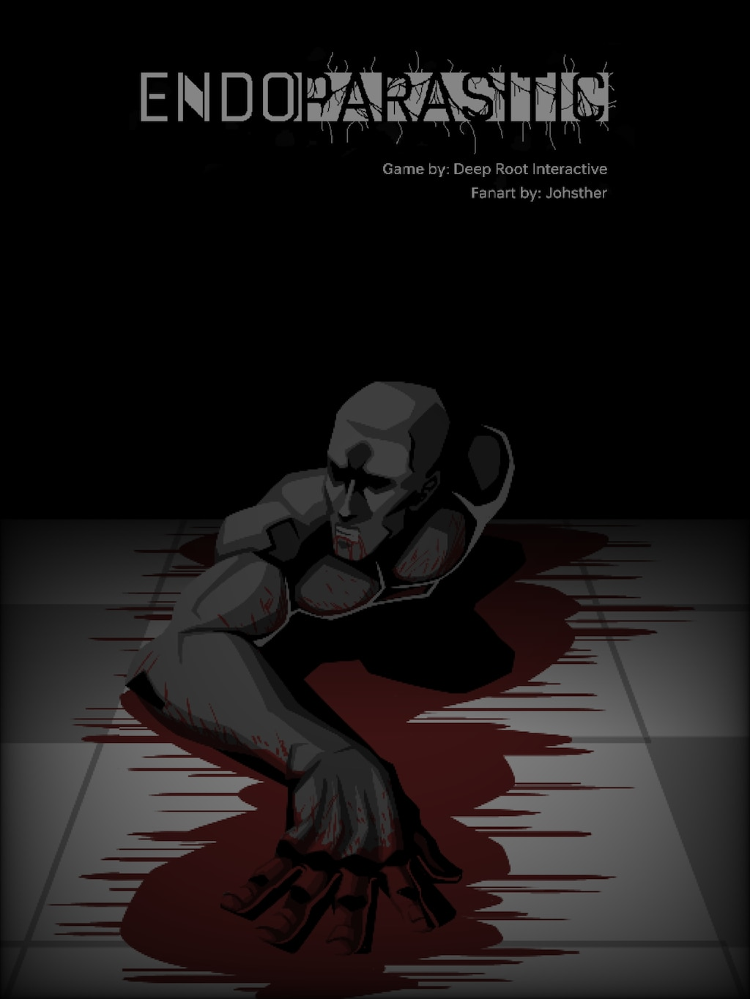
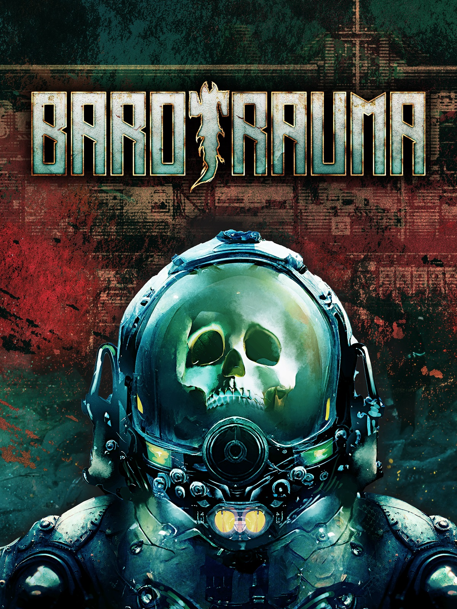

Five Nights at Freddy's (скорочено FNaF) — франшиза відеоігор, створених та опублікованих Скоттом Коутоном для Microsoft Windows, iOS, та Android.
Франшиза розповідає про містичні події в піцерії «Freddy Fazbear's Pizza», що нагадує «Chuck E. Cheese's» та «ShowBiz Pizza Place». У перших трьох іграх гравець постає в ролі нічного сторожа в тій самій піцерії (в третій частині — та ж піцерія, але спалена), де він повинен використовувати інструменти та відеокамери, щоб на нього не напали роботи-аніматроніки, стилізовані під звірят, що хочуть вбити гравця. У четвертій грі події відбуваються в будинку дитини, яка захищається від галюцинацій-аніматроніків, бігаючи по кімнаті і закриваючи двері. П'ята гра проходить на станції техобслуговуванні, що належить дочірній компанії Freddy Fazbear's Pizza. Гравець виступає в ролі охоронця-техніка, якому щоночі треба виконувати завдання, отримані від ШІ. У шостій частині гравець стає директором піцерії, яку він повинен прикрасити, а також повинен знову стати нічним охоронцем, як і в перших частинах.

Friday the 13th: The Game (з англ. - "П'ятниця, 13-те: Гра") - комп'ютерна гра в жанрі Survival horror, розроблена американською компанією IllFonic і видана Gun Media. Гра заснована на франшизі з тим самим ім'ям, що належить New Line Cinema. Вихід гри відбувся 26 травня 2017 року на Microsoft Windows, Xbox One та PlayStation 4 та 13 серпня 2019 року на Nintendo Switch.

Phasmophobia — інді-гра в жанрі survival horror, розроблена та опублікована Kinetic Games. Гра з'явилась у ранньому доступі у Steam для Windows у вересні 2020 року із підтримкою віртуальної реальності. Наступного місяця гра отримала популярність завдяки тому, що в неї грали багато відомих стримерів Twitch та YouTube, в основному під час Геловіна. Станом на 15 жовтня 2020 року гра стала шостою за популярністю на Twitch і найбільш продаваною у Steam у всьому світі.

Endoparasitic - вкрай незвичайна гра в жанрі survival horror з унікальною механікою керування персонажем однією рукою. Гра має top-down геймплей, де все "крутиться" навколо руки. Управління зроблено у форматі drag-and-drop однією рукою.
Історія гри розповідає про дослідника, який втратив кінцівки та заразився паразитом. Візуал гри мінімалістичний і сірий, але дозволяє точно визначати обстановку. Геймплей поєднує елементи виживання та вирішення головоломок. Гравцю пропонується варіативність у виборі тактики та послідовності знищення загроз.

Barotrauma (укр. Баротравма) — рольова відеогра в жанрі survival horror, розроблена Undertow Games та випущена Daedalic Entertainment для Microsoft Windows, Linux та MacOS. 5 червня 2019 року гра була випущена у ранній доступ, а повна версія вийшла 13 березня 2023 року.
Це гра з виглядом збоку, дія якої відбувається в далекому майбутньому, на підводному човні, що плаває в океані Європи, одного із супутників Юпітера. Гравець виступає в ролі одного з членів екіпажу, що повинен взаємодіяти з колегами задля успішного виконання місій.